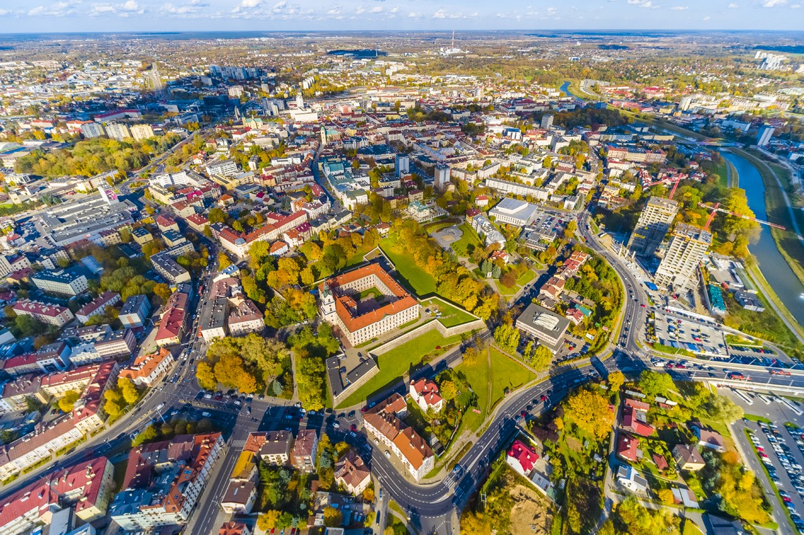
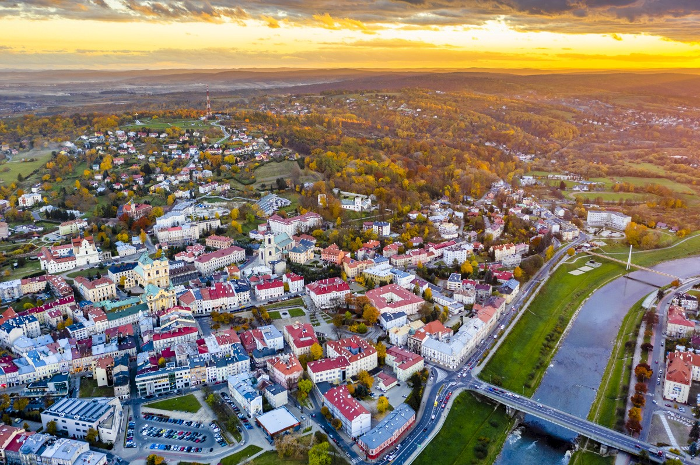
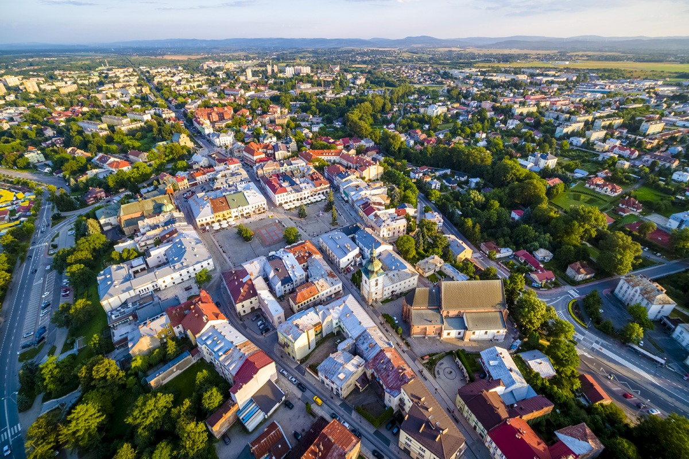

O Województwie
Województwo podkarpackie to region położony w południowo-wschodniej Polsce, graniczący ze Słowacją i Ukrainą. Stolicą regionu jest Rzeszów – nowoczesne miasto, łączące innowacje z tradycją. Podkarpackie zachwyca różnorodnością: od dzikich Bieszczadów, przez malownicze doliny, po bogatą kulturę i historię. Znajdziesz tu drewniane cerkwie UNESCO, zamki, uzdrowiska oraz Dolinę Lotniczą – centrum polskich technologii.
Największe Miasta

Przemyśl
